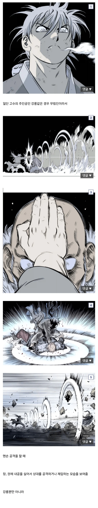
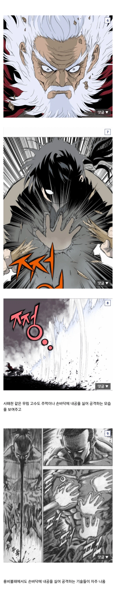
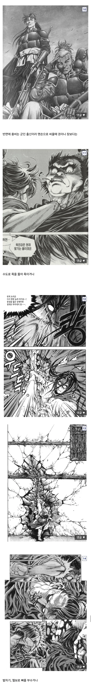
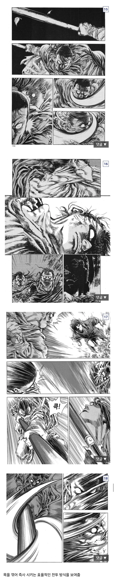
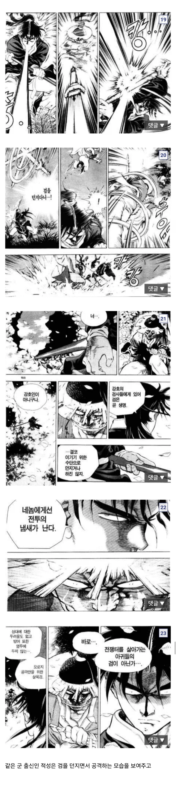
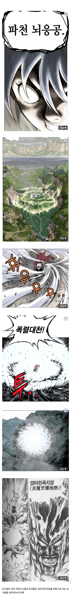
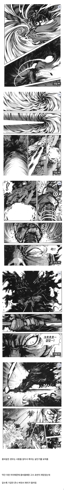

그래도 난 고수도 재밌게 봤따
요즘 플래닛 하는데
이거 보니까 법사 vs 닼나같음
ufc vs 총
그렇기에 사신을 보시기 바랍니다.
무협알못인데 고수 후반부에 기술써서 태풍일으키고 산사태 일으키니까 마우스휠 드륵드륵 하게되더라
무협은 드래곤볼 되기 전에 마무리 해야함
무림은 pve 컨텐츠라 광역기나 방관뎀을 주로쓰고
군용은 pvp전용 컨텐츠라 일단 상대를 조지는 스킬이 많구나
저기 나오는 칼던진놈이 전 부하인데 내공기술 쓰니까 창술로 개발라 버리고 너가 무슨 무림인 인줄 아냐며 개갈굼. 실전 군 무공은 무림 내공중심 보여주기식 무공과 다르다는걸 납득함.
말타고 창쓰는 군문의 무공이다보니 경공이 없다시피하고 독술같은 잡기에 약한 면모가 있음
고수 한창 볼 땐 댓글에 맨날 용비불패 찾는 아재들 좀 그랬는데, 이래 올라오는 거 보면 찾을만 했었구나 하는 생각이 들음 ㅋㅋ
고수가 약간 이런게 아쉬웠지 최강급들 필살기가 죄다 똑같이 생긴 색깔놀이 광역기임